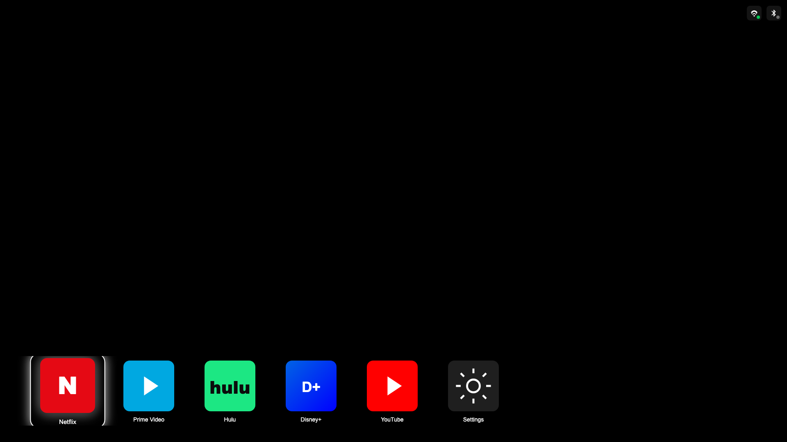
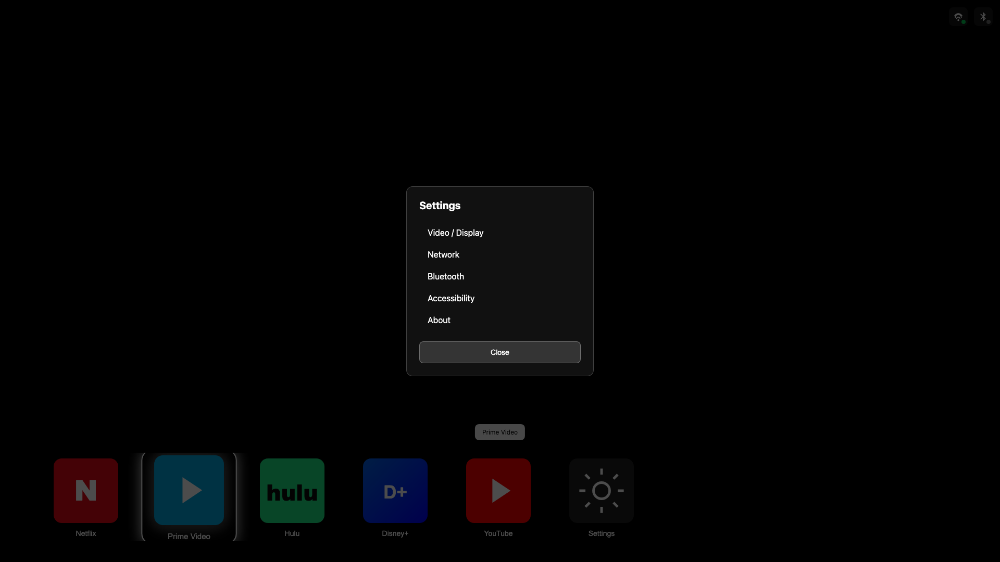

UI Wireframes and User Journey¶
Version: 1.1
Date: February 2025
Product: Portable HDMI Streaming Device – TV Launcher UI
Screenshots below are captured from the live HTML5 UI prototype at 1920×1080.
Table of Contents¶
- Wireframe Overview
- Display UI Screenshots
- User Journeys
- State Transitions
- Edge Cases and Error States
1. Wireframe Overview¶
1.1 Screen Dimensions¶
| Resolution | Dimensions | Icon Size |
|---|---|---|
| 720p | 1280 × 720 | 120 px |
| 1080p | 1920 × 1080 | 160 px |
| 4K | 3840 × 2160 | 320 px |
1.2 UI Zones¶
┌─────────────────────────────────────────────────────┐
│ Zone A: Content / Brand area (future) │
│ (optional logo, promotional banner) │
├─────────────────────────────────────────────────────┤
│ Zone B: Empty / Ambient (black) │
│ Primary viewing area │
├─────────────────────────────────────────────────────┤
│ Zone C: Icon Rail (bottom 30%) │
│ App icons, Settings, navigation │
├─────────────────────────────────────────────────────┤
│ Zone D: Network Status (top-right overlay) │
│ Wi-Fi, Bluetooth indicators │
└─────────────────────────────────────────────────────┘
2. Display UI Screenshots¶
Screenshots captured from the live HTML prototype at 1920×1080. To regenerate:
cd ui-prototype && python3 -m http.server 9999 & then python3 capture_screenshots.py
2.1 Initial State – First Boot, Netflix Focused¶
State: Power on; home page loaded; first icon (Netflix) focused by default.

Annotations: - Netflix has white 4 px border and glow - Netflix icon scaled to 1.08× - Tooltip "Netflix" may appear above icon - Wi-Fi green (connected), Bluetooth gray (disconnected)
2.2 Focus Moved Right – Prime Video Focused¶
State: User pressed RIGHT; focus moved; rail scrolled left; Prime Video in focus.

Annotations: - Rail has scrolled left (river effect) - Prime Video shows focus border and glow - Netflix now unfocused (no border, scale 1.0)
2.3 Settings Panel Open (Modal Overlay)¶
State: User pressed Enter on Settings icon (or S key); Settings modal displayed.

Annotations:
- Backdrop: rgba(0,0,0,0.7)
- Panel: dark (#111), ~360 px wide, centered
- Focus trapped inside panel; UP/DOWN to move, Enter to select, Escape to close
- Icon rail dimmed behind overlay
2.4 Network Icon Focused – Wi-Fi Tooltip (Wireframe)¶
State: User tabbed or moved focus to Wi-Fi icon; tooltip visible.
Annotations: - Tooltip: white background, dark text - Wi-Fi icon has focus border when focused - Status badge (green dot) indicates connected
2.5 App Launch Flow – Transition (Wireframe)¶
State: User selected Netflix; app launching; brief transition before content.
╔═══════════════════════════╗
║ Launching Netflix... ║
║ (spinner or progress) ║
╚═══════════════════════════╝
2.6 State Diagram (Mermaid)¶
stateDiagram-v2
[*] --> Home
Home --> FocusMove: Arrow Left/Right
FocusMove --> Home: (same state, visual update)
Home --> SettingsOpen: Enter on Settings
SettingsOpen --> Home: Escape or Close
Home --> AppLaunch: Enter on App
AppLaunch --> [*]: Content plays3. User Journeys¶
3.1 Journey 1: Power On → Home Page → Launch Netflix¶
Goal: User powers on the device and launches Netflix to stream content.
| Step | Action | System Response | User Feedback |
|---|---|---|---|
| 1 | User plugs in device and powers on | Device boots; HDMI handshake with TV | TV shows signal |
| 2 | Device sends CEC power-on (optional) | TV wakes and switches to HDMI input | TV turns on |
| 3 | Home page loads | Black screen; icon rail appears at bottom | Icons visible (see screenshot above) |
| 4 | First icon (Netflix) auto-focused | White border + glow on Netflix | Clear focus |
| 5 | User presses Enter | App launch triggered | Brief loading |
| 6 | Netflix session starts | Streaming content displays | Video plays |
| 7 | User presses Back (remote) | App exits; return to home | Home page shown |
Detailed sub-steps for Steps 3–6:
- Home page loads (3)
- Display HAL presents framebuffer
- UI Service renders icon rail with icons from
layout.json - Focus index = 0 (Netflix)
-
Network icons show status (Wi-Fi connected, Bluetooth disconnected)
-
First icon focused (4)
- Netflix receives focus styles: 4 px white border, 12 px glow, scale 1.08
- Tooltip "Netflix" may appear above icon (optional)
-
No scrolling; rail at initial position
-
User presses Enter (5)
- Main loop routes key to UI Service
- UI Service calls
select()→ returns focused app ID "netflix" - Main loop passes to App Launcher →
launch("netflix") -
Streaming Service starts session; Stream Pipeline opens content
-
Netflix session starts (6)
- Video frames rendered to Display HAL
- HDMI outputs to TV
- User sees Netflix UI or content
3.2 Journey 2: Navigate Icon Row with Remote¶
Goal: User explores available apps by moving focus left and right.
| Step | Action | System Response | User Feedback |
|---|---|---|---|
| 1 | User on home; Netflix focused | - | - |
| 2 | User presses Right | Focus moves to Prime Video; rail scrolls left | Prime highlighted |
| 3 | User presses Right again | Focus moves to Hulu; rail scrolls left | Hulu highlighted |
| 4 | User presses Right repeatedly | Focus moves through Disney+, YouTube, Settings | River scroll; new icons enter |
| 5 | User at Settings; presses Right | No change; focus stays on Settings | No wrap |
| 6 | User presses Left | Focus moves to YouTube | YouTube highlighted |
| 7 | User presses Left repeatedly | Focus moves back toward Netflix | Rail scrolls right |
| 8 | User at Netflix; presses Left | No change; focus stays on Netflix | No wrap |
Detailed sub-steps:
- Focus movement (2–4)
- Input HAL receives RemoteKey::RIGHT
- Main loop calls
ui->navigate(RIGHT) - UI Service:
focusIndex = (focusIndex + 1) % count - Rail
translateXupdated for river scroll (e.g.-focusIndex * (iconWidth + gap)) - CSS transition: 200–250 ms ease-out
-
New focused icon gets border + glow; previous loses it
-
Edge – last icon (5)
- When
focusIndex === count - 1, RIGHT does nothing (or wrap, per spec) -
Spec says "no wrap" at end; focus stops at Settings
-
Edge – first icon (8)
- When
focusIndex === 0, LEFT does nothing - Focus stops at Netflix
3.3 Journey 3: Open Settings and Change Option¶
Goal: User opens Settings and navigates to an option.
| Step | Action | System Response | User Feedback |
|---|---|---|---|
| 1 | User focuses Settings icon | Settings has focus border + glow | Settings highlighted |
| 2 | User presses Enter | Settings modal opens | Overlay + panel visible |
| 3 | First item (Video/Display) focused | Cursor on first list item | Item highlighted |
| 4 | User presses Down | Focus moves to Network | Network highlighted |
| 5 | User presses Down | Focus moves to Bluetooth | Bluetooth highlighted |
| 6 | User presses Enter | Bluetooth settings sub-panel (future) | Sub-panel or action |
| 7 | User presses Back | Sub-panel closes; back to Settings list | Settings list |
| 8 | User presses Escape or selects Close | Modal closes | Return to home |
Detailed sub-steps:
- Open Settings (2)
- UI Service detects focused element is Settings
- Modal
aria-hidden="false";display: flex - Focus moves to first Settings item or Close button
-
Backdrop blocks clicks on icon rail
-
Navigate Settings list (4–5)
- UP/DOWN move focus within list
- Focus trap: Tab/Escape not used; Back and Escape close
-
Each item has aria-label for screen readers
-
Close Settings (8)
- User presses Escape or clicks Close
- Modal
aria-hidden="true"; hidden - Focus returns to Settings icon on rail
3.4 Journey 4: Check Wi-Fi Status via Network Icons¶
Goal: User checks connectivity by focusing network icons.
| Step | Action | System Response | User Feedback |
|---|---|---|---|
| 1 | User navigates focus to top-right (future: or dedicated key) | Wi-Fi icon receives focus | Wi-Fi highlighted |
| 2 | Wi-Fi icon focused | Tooltip appears: "Wi-Fi: Connected" | Status visible |
| 3 | User moves focus to Bluetooth | Bluetooth icon focused | Bluetooth highlighted |
| 4 | Bluetooth icon focused | Tooltip: "Bluetooth: Disconnected" | Status visible |
| 5 | User moves focus away | Tooltip hides | - |
Note: Current prototype places network icons in top-right; focus may require Tab or dedicated "status" key. TV remote typically uses D-pad; network icons could be in a secondary row or revealed via Settings.
3.5 Journey 5: Adjust Volume (CEC Passthrough)¶
Goal: User adjusts TV volume with remote while on home page.
| Step | Action | System Response | User Feedback |
|---|---|---|---|
| 1 | User on home page | - | - |
| 2 | User presses Volume Up | Main loop routes to HDMI-CEC Service | - |
| 3 | CEC Service sends sendUserControl(VOLUME_UP) |
CEC HAL sends USER_CONTROL_PRESSED 0x41 | TV volume increases |
| 4 | User presses Volume Down | Same flow; 0x42 sent | TV volume decreases |
| 5 | User presses Mute | Same flow; 0x43 sent | TV mutes |
Detailed sub-steps: - Volume keys do not change UI focus - Main loop handles VOLUME_UP/DOWN/MUTE separately from navigation keys - CEC commands sent directly to TV
4. State Transitions¶
4.1 State Diagram¶
┌─────────────┐
│ BOOTING │
└──────┬──────┘
│
▼
┌─────────────┐
┌───────▶│ HOME │◀───────┐
│ └──────┬──────┘ │
│ │ │
│ Enter │ Enter │ Back /
│ on Settings │ on App Escape
│ │ │
▼ ▼ │
┌─────────────┐ ┌─────────────┐ │
│ SETTINGS │ │ APP │────────┘
│ OPEN │ │ PLAYING │
└─────────────┘ └─────────────┘
4.2 Focus Index and Scroll Position¶
| User Action | focusIndex | Scroll Direction | New Focus |
|---|---|---|---|
| Right at start | 0 → 1 | Rail left | Prime |
| Right at mid | n → n+1 | Rail left | Next icon |
| Right at end | no change | - | Settings |
| Left at end | n → n-1 | Rail right | Previous |
| Left at start | no change | - | Netflix |
| Enter on app | - | - | Launch app |
| Enter on Settings | - | - | Open modal |
5. Edge Cases and Error States¶
5.1 Wireframe: No Apps Available¶
┌────────────────────────────────────────────────────────────────────────────────┐
│ │
│ │
│ │
│ No apps available │
│ Connect to network and try again │
│ │
│ │
│ [Settings] [WiFi○] [BT○] │
│ │
└────────────────────────────────────────────────────────────────────────────────┘
5.2 Wireframe: Connection Error (Streaming Failed)¶
┌────────────────────────────────────────────────────────────────────────────────┐
│ │
│ ┌─────────────────────────────────────────────────────────────────────────┐ │
│ │ Could not connect to Netflix │ │
│ │ Check your network connection. │ │
│ │ [ Retry ] [ Back ] │ │
│ └─────────────────────────────────────────────────────────────────────────┘ │
│ │
│ [Netflix] [Prime] [Hulu] ... │
│ │
└────────────────────────────────────────────────────────────────────────────────┘
5.3 Wireframe: Loading / Buffering¶
┌────────────────────────────────────────────────────────────────────────────────┐
│ │
│ Buffering... 45% │
│ ████████████░░░░░░░░ │
│ │
│ │
│ [Netflix] [Prime] ... (dimmed) │
│ │
└────────────────────────────────────────────────────────────────────────────────┘
6. Regenerating Screenshots¶
cd ui-prototype
pip install playwright
playwright install chromium
python3 -m http.server 9999 &
python3 capture_screenshots.py
Screenshots are saved to docs/images/.
7. Related Documents¶
| Document | Description |
|---|---|
| TV_UI_Design_Spec.md | Color palette, typography, layout specs |
| ui-prototype/ | Interactive HTML5 prototype |
| Product_Requirements_Document.md | User stories and requirements |